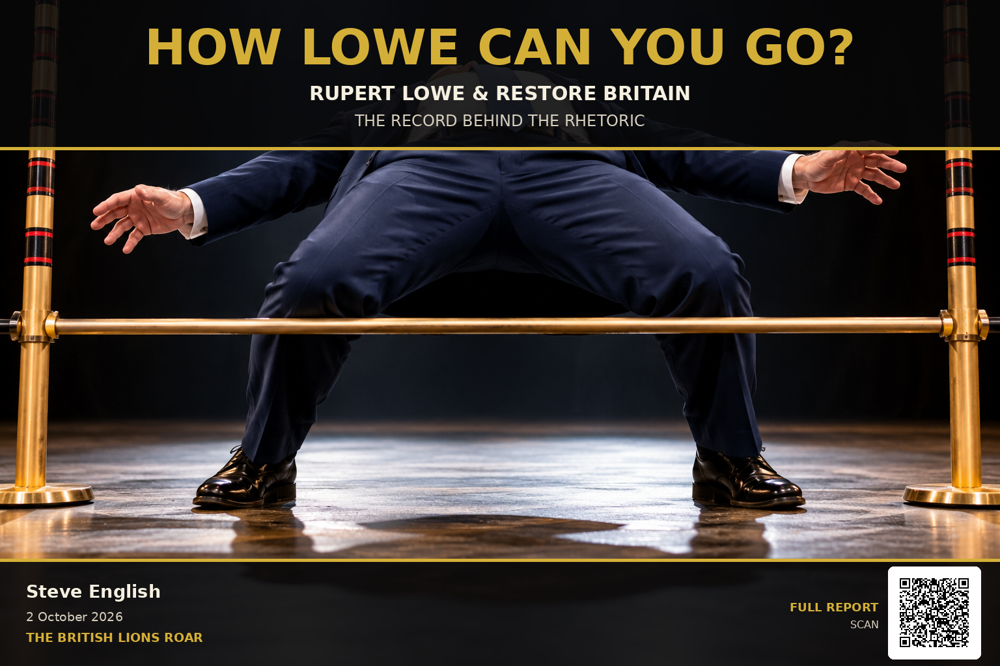

The British Lions Roar · Evidence Report
How Lowe Can You Go?
Restore Britain's only MP, his Commons record on the issues his own party puts first, and what Restore has achieved at the ballot box.

- Restore Britain was registered as a political party on 20 March 2026. Its leader and only MP, Rupert Lowe, then recorded no Commons vote until 22 April, while 47 divisions went by.
- Lowe has voted in 33.1% of the Commons divisions he was eligible for. The Commons average is 72.6%. He ranks 638th of 649 MPs.
- On 13 July, at the Second Reading of the Immigration and Asylum Bill, no vote from Lowe was recorded. He voted in the Commons the next day.
- On 2 September, Parliament held four votes on the Representation of the People Bill. Restore lists "Safeguard Election Integrity" among its ten objectives. Lowe recorded no vote in any of them.
- Restore has stood in 10 elections since registering and won none. In three, its vote was bigger than the margin by which Reform UK lost.
The Bigger Picture
Restore Britain was officially registered as a political party on 20 March 2026, with Rupert Lowe as its leader and only MP.
From that date until 22 April, Lowe recorded no Commons votes at all. In that time the Commons held 47 divisions. His last recorded vote before registration was on 18 March; his next was on 22 April.
His voting participation stands at 33.1% of the Commons divisions for which he was eligible: 195 of 590. The Commons average is 72.6%. That ranks him 638th out of 649 MPs.
Restore Britain has published ten headline objectives. They include Reverse Mass Immigration, Put British Interests First, Rebuild Britain's Industry, Infrastructure, and Energy Security, Make Britain Safe Again, Restore the National Health Service and Safeguard Election Integrity.
So this report asks one straightforward question: when those issues came before Parliament for a vote, what did Restore Britain's only MP do?
Throughout, NO VOTE RECORDED means exactly that: Lowe's name does not appear as voting either for or against. It does not tell us why.
28 April — Asylum
Lowe was in the voting lobbies that evening. Then Parliament moved on to asylum.
- 6:13pm Privilege motion — Lowe votes Division 512
- 6:47pm Pension Schemes Bill — Lowe votes Division 513
- 7:28pm Draft Asylum Seekers (Reception Conditions) (Amendment) Regulations 2026 — NO VOTE RECORDED Division 514
- 7:41pm Draft Immigration and Asylum (Provision of Accommodation to Failed Asylum-Seekers) Regulations 2026 — NO VOTE RECORDED Division 515
Reverse Mass Immigration is the first of Restore's ten objectives.
2 June — The Armed Forces
Lowe voted three times in a row on the Armed Forces Bill. Thirteen minutes after the third, MPs voted again on the same Bill.
- 6:44pm Armed Forces Bill, New Clause 2 — Lowe votes Division 7
- 6:58pm Armed Forces Bill, New Clause 5 — Lowe votes Division 8
- 7:11pm Armed Forces Bill, New Clause 6 — Lowe votes Division 9
- 7:24pm Armed Forces Bill, New Clause 13: extending defence housing standards to single living accommodation — NO VOTE RECORDED Division 10
23 June — Puberty Blockers
Lowe voted twice on defence that afternoon. Later, Parliament voted on puberty blockers.
- 4:12pm Opposition Day: Defence spending and readiness — Lowe votes Division 37
- 4:26pm Defence spending and readiness, Government amendment — Lowe votes Division 38
- 6:59pm Opposition Day: Puberty blockers — NO VOTE RECORDED Division 39
24 June — Carbon Targets
Lowe's record does not show him voting earlier that day, so these votes are listed on their own. Parliament held three consecutive votes under the Climate Change Act 2008.
- 7:33pm Draft Carbon Budget Order 2026 — NO VOTE RECORDED Division 41
- 7:47pm Draft Climate Change Act 2008 (International Aviation and International Shipping) Regulations 2026 — NO VOTE RECORDED Division 42
- 7:59pm Draft Climate Change Act 2008 (Credit Limit) Order 2026 — NO VOTE RECORDED Division 43
13 July — The Immigration and Asylum Bill
Parliament held two votes on the Government's Immigration and Asylum Bill, the second of them the Bill's Second Reading.
- 9:59pm Immigration and Asylum Bill: Reasoned Amendment to Second Reading — NO VOTE RECORDED Division 54
- 10:16pm Immigration and Asylum Bill: Second Reading — NO VOTE RECORDED Division 55
Lowe had not stopped voting. The next day, 14 July, his record shows two votes on the Public Office (Accountability) Bill. On 15 July it shows two more, on trade union ballots and employment law.
2 September — Election Law
Safeguard Election Integrity is one of Restore Britain's ten headline objectives. On 2 September, Parliament held four consecutive votes on the Representation of the People Bill, ending with its final Commons vote.
- 7:04pm Report Stage, New Clause 65 — NO VOTE RECORDED Division 61
- 7:19pm Report Stage, New Clause 67 — NO VOTE RECORDED Division 62
- 7:34pm Report Stage, New Clause 88 — NO VOTE RECORDED Division 63
- 7:59pm Third Reading — NO VOTE RECORDED Division 64
When Lowe Did Vote
This is not a claim that Rupert Lowe never votes on subjects connected to Restore's programme. He does. Since Restore became a registered party, his official record includes:
| Date | Subject | Lowe |
|---|---|---|
| 22 April | Crime and Policing Bill | VOTED |
| 2 June | Armed Forces Bill | 3 VOTES |
| 9 June | Steel Industry (Nationalisation) Bill | 3 VOTES |
| 10 June | Railways Bill | 3 VOTES |
| 23 June | Defence spending and readiness | 2 VOTES |
| 1 July | Taxation (Energy and Vehicles) Bill | 2 VOTES |
| 11 September | Terminally Ill Adults (End of Life) Bill, Second Reading | VOTED NO |
So this is not about pretending Lowe never enters the voting lobby. It is about which votes he records, and which he does not, when Parliament deals with subjects Restore itself names as priorities.
And Then There Is the Ballot Box
Since registering on 20 March, Restore Britain has stood candidates in 10 elections. It has won none. These are the official results.
| Date | Election | Winner | Reform UK | Restore |
|---|---|---|---|---|
| 18 Jun | Makerfield — UK Parliament by-election | Labour 24,927 | 15,696 | 3,111 |
| 16 Jul | Norfolk — Police and Crime Commissioner by-election | Reform UK 32,647 | 32,647 | 13,319 |
| 16 Jul | Norfolk County Council, Old Catton — division by-election | Conservative 973 | 561 | 98 |
| 30 Jul | Greater Manchester — mayoral by-election (first preferences) | Labour 251,449 | 111,928 | 46,289 |
| 20 Aug | Barnsley Council, Penistone East — ward by-election | Labour 1,728 | 795 | 218 |
| 27 Aug | Dover District Council, Guston, Kingsdown & St Margaret's-at-Cliffe — ward by-election | Green 767 | 733 | 284 |
| 1 Oct | Blackpool Council, Claremont — ward by-election | Labour 458 | 419 | 79 |
| 1 Oct | Northumberland County Council, Amble — division by-election | Labour 439 | 379 | 76 |
| 1 Oct | Northumberland County Council, Hirst — division by-election | Labour 350 | 210 | 72 |
| 1 Oct | North West Leicestershire District Council, Long Whatton & Diseworth — ward by-election | Conservative 576 | 204 | 55 |
Restore is also standing in the Holborn and St Pancras parliamentary by-election on 8 October 2026, after this report was written.
In most of these contests Restore finished a long way behind both the winner and Reform. In three, the numbers line up very differently.
Three Elections
Dover — 27 August
Green 767 · Reform UK 733 · Restore Britain 284
Reform UK fell short of the win by 34 votes.
Restore fell short of the win by 483 votes, but took 284 votes.
Blackpool — 1 October
Labour 458 · Reform UK 419 · Restore Britain 79
Reform UK fell short of the win by 39 votes.
Restore fell short of the win by 379 votes, but took 79 votes.
Amble — 1 October
Labour 439 · Reform UK 379 · Restore Britain 76
Reform UK fell short of the win by 60 votes.
Restore fell short of the win by 363 votes, but took 76 votes.
Reform UK's margin of defeat against Restore Britain's vote (votes)
In each of those three elections, Reform UK's margin of defeat was smaller than Restore Britain's entire vote.
The results cannot tell us how individual Restore voters would have voted had Restore not stood. They do establish that, in all three contests, Restore's vote was larger than the gap between Reform and the winner. And Restore did not win any of them.
The Record
In Parliament
Restore Britain registered as a party on 20 March. Its only MP recorded no Commons vote until 22 April. His participation stands at 33.1% against a Commons average of 72.6%, 638th of 649.
On immigration and asylum, election law, carbon targets and puberty blockers, the Commons voted and no vote from Lowe was recorded. On 28 April, 2 June and 23 June, the record shows him voting earlier in the same sitting, before the votes he missed. On 13 July he voted the following day.
There are also subjects connected to Restore's programme on which Lowe did vote, including defence, policing, steel, the railways, energy taxation and assisted dying.
At the Ballot Box
Ten elections. No wins. In Dover, Blackpool and Amble, Restore's vote was bigger than Reform UK's margin of defeat, while Restore itself finished behind both Reform and the winner.
Those are the numbers.